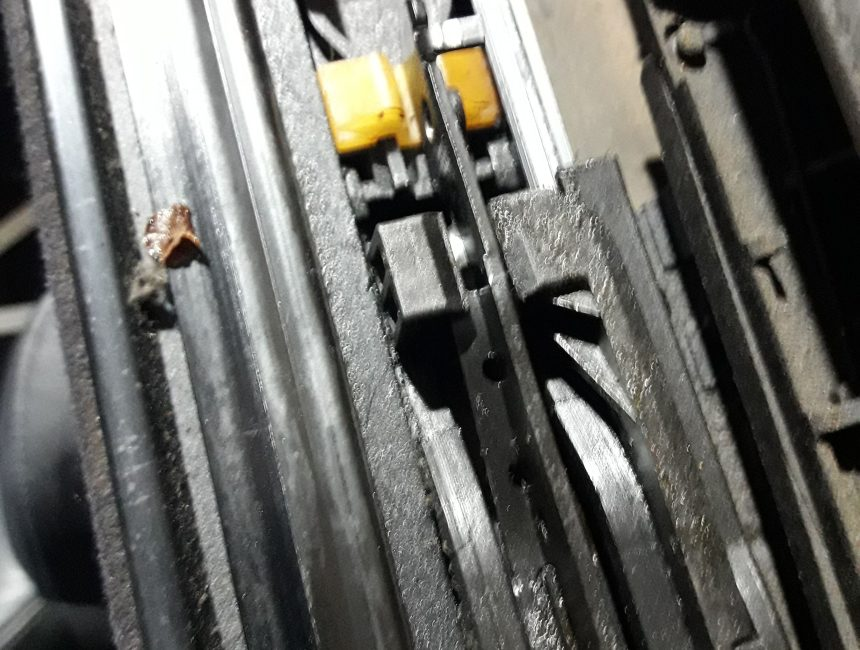

Lona y cubiertas
Reparación y sustitución de capotas
Casi todas las capotas llegan con la misma historia: agua en la moqueta, un desgarro en una esquina, una luneta que ya no deja ver. Valoramos si la cubierta se puede reparar o si lo honesto es sustituirla, y te decimos cuál de las dos es antes de que te comprometas.
- Lona de patrón original, vinilo o cubiertas rígidas
- Cambio de luneta trasera, incluida la térmica
- Reparación de costuras, esquinas y tensión
- Renovación de juntas y prueba en la entrega
